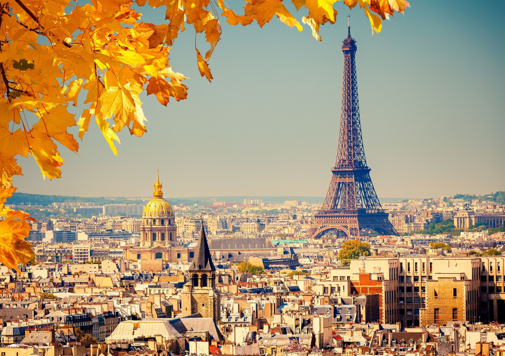

sed do eiusmod tempor incididunt ut labore et dolore magna aliqua.
Pellentesque nec nam aliquam sem et tortor consequat id.
Elit scelerisque mauris pellentesque pulvinar pellentesque habitant.
Aliquam ut porttitor leo a. Quis eleifend quam adipiscing vitae proin.
Ut faucibus pulvinar elementum integer enim neque volutpat.
Pellentesque diam volutpat commodo sed egestas egestas.
Vel fringilla est ullamcorper eget nulla facilisi etiam dignissim diam.
Augue mauris augue neque gravida in fermentum et sollicitudin ac.
Metus aliquam eleife
| Portuguese | English |
|---|---|
| Olá | Hello |
| Como você está? | How are you? |
| Como foi o seu dia? | How was your day? |
| Adeus | Goodbye |